1080B62 catalytic converter - r + r
- Path
- Procedures > 10 ENGINE > 1080 EXHAUST EMISSION CONTROL SYSTEM > 1080B exhaust emission control system > 1080B62 catalytic converter - r + r
- Kind
- repair procedure (removal / refitting; the operation number is the code)
- Applies to
- engines: 1.6 TS, 2.0 TS, 1.9 JTD 8V, 1.9 JTD 16V; all production periods
- Interactive page
- https://sloeber94.github.io/elrnDB-a147/en/#/3024875
Applies to: engines: 1.6 TS; all production periods; only with equipment: 103 CV
 Removing
Removing
 Refitting
RefittingPosition the vehicle on the ramp.
Ensure that the ignition key is in the OFF postition, then disconnect the battery negative terminal.
 | Name | Connector |
|---|---|---|
- | Battery |
1. Disconnect the electrical connections (1a) and (1b) for the Lambda sensors.
| Name | Connector |
|---|---|---|
1a | Lambda sensor on pre-catalyzer |
| Name | Connector |
|---|---|---|
1b | Lambda sensor downstream of post-catalyzer |
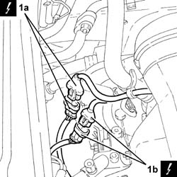
Applies to: engines: 1.6 TS; all production periods; only with equipment: 103 CV
Proceed with the removal 1072C44 exhaust manifold heat shield on bulkhead - r+r .
1. Undo the nuts fixing the catalytic converter, manifold side.
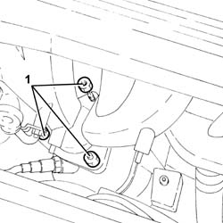
Applies to: engines: 1.6 TS; all production periods; only with equipment: 103 CV
1. Undo the nuts securing the catalytic converter to the engine sump.
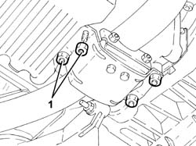
Applies to: engines: 1.6 TS; all production periods; only with equipment: 103 CV
1. Undo the bolts fixing the catalytic converter flexible mounting brackets, bodyshell side.
2. Undo the bolts fixing the catalytic converter, intermediate silencer side.
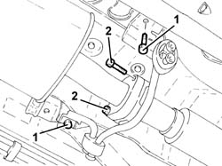
Applies to: engines: 1.6 TS; all production periods; only with equipment: 103 CV
1. Remove the catalytic converter (1a), complete with Lambda sensors (1b), flexible mounting brackets (1c) and support connected to the crankcase sump (1d).
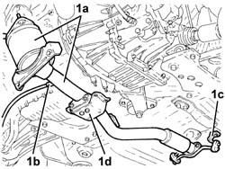
Applies to: engines: 1.6 TS; all production periods; only with equipment: 103 CV
Refitting
RemovingPlace the complete catalytic converter back in its housing.
1. Tighten the bolts fixing the catalytic converter, intermediate silencer side, to the recommended torque.
 | Fastening | Component | Ø | Value (daNm) |
|---|---|---|---|---|
1 | Bolt | CATALYTIC CONVERTER (ONE) | M8 | (Intermediate silencer side) 2.7 ÷ 3.3 |
2. Tighten the bolts fixing the catalytic converter flexible mounting brackets, bodyshell side.
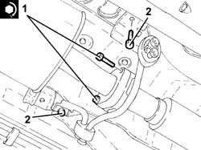
Applies to: engines: 1.6 TS; all production periods; only with equipment: 103 CV
Tighten the nuts fixing the catalyti converter mounting, crankcase sump side.
1. Tighten the nuts fixing the catalytic converter, manifold side.
| Fastening | Component | Ø | Value (daNm) |
|---|---|---|---|---|
1 | Nut | CATALYTIC CONVERTER (ONE) | M10 | (Manifold side) 4.1 ÷ 5.0 |
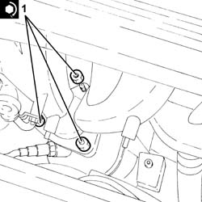
Applies to: engines: 1.6 TS; all production periods; only with equipment: 103 CV
Proceed with the refitting 1072C44 exhaust manifold heat shield on bulkhead - r+r .
Connect the Lambda probe electrical connections.
Connect the battery terminal (-).
Remove the car from the ramp.
Applies to: engines: 1.6 TS; all production periods; only with equipment: 120 CV
Removing
RefittingPosition the vehicle on the ramp.
Ensure that the ignition key is in the OFF postition, then disconnect the battery negative terminal.
| Name | Connector |
|---|---|---|
- | Battery |
1. Disconnect the electrical connection for the Lambda sensor.
| Name | Connector |
|---|---|---|
1 | Lambda sensor downstream of post-catalyzer |
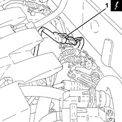
Applies to: engines: 1.6 TS; all production periods; only with equipment: 120 CV
1. Release the electrical wiring for the Lambda sensor from the fastenings.

Applies to: engines: 1.6 TS; all production periods; only with equipment: 120 CV
1. Undo the nuts fixing the catalytic converter to the catalytic pre-converter.
2. Tighten the bolts fixing the catalytic converter to the intermediate exhaust silencer.
3. Undo the bolts (3a) fixing the flexible mountings and remove the catalytic converter (3b), complete with Lambda sensor (3c) and gaskets.
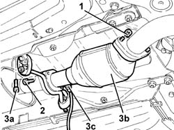
Applies to: engines: 1.6 TS; all production periods; only with equipment: 120 CV
Refitting
Removing1. Place the catalytic converter (1a), complete with Lambda sensor (1b) and gaskets, back in its housing.
2. Tighten the bolts for the flexible mountings.
3. Tighten the bolts fixing the catalytic converter to the intermediate exhaust silencer to the recommended torque.
| Fastening | Component | Ø | Value (daNm) |
|---|---|---|---|---|
3 | Bolt | CATALYTIC CONVERTER (ONE) | M8 | (Intermediate silencer side), 2.7 ÷ 3.3 |
4. Tighten the nuts fixing the catalytic converter to the catalytic pre-converter to the recommended torque.
| Fastening | Component | Ø | Value (daNm) |
|---|---|---|---|---|
4 | Nut | COOLANT SYSTEM FITTINGS | M6 | 0.7 ÷ 1.1 |

Applies to: engines: 1.6 TS; all production periods; only with equipment: 120 CV
Secure the electrical wiring for the Lambda sensor to the fastenings.
Connect the electrical connection for the Lambda sensor.
Connect the battery terminal (-).
Remove the car from the ramp.
Applies to: engines: 2.0 TS; all production periods
Removing
RefittingPosition the vehicle on the ramp.
Ensure that the ignition key is in the OFF postition, then disconnect the battery negative terminal.
| Name | Connector |
|---|---|---|
- | Battery |
1. Disconnect the electrical connection for the Lambda sensor.
| Name | Connector |
|---|---|---|
1 | Lambda sensor downstream of post-catalyzer |
Applies to: engines: 2.0 TS; all production periods
1. Release the electrical wiring for the Lambda sensor from the fastenings.
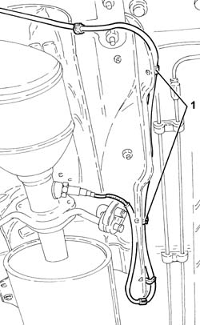
Applies to: engines: 2.0 TS; all production periods
1. Undo the nuts fixing the catalytic converter to the catalytic pre-converter.
2. Tighten the bolts fixing the catalytic converter to the intermediate exhaust silencer.
3. Undo the bolts (3a) fixing the flexible mountings and remove the catalytic converter (3b), complete with Lambda sensor (3c) and gaskets.
Applies to: engines: 2.0 TS; all production periods
Refitting
Removing1. Place the catalytic converter (1a), complete with Lambda sensor (1b) and gaskets, back in its housing.
2. Tighten the bolts for the flexible mountings.
3. Tighten the bolts fixing the catalytic converter to the intermediate exhaust silencer to the recommended torque.
| Fastening | Component | Ø | Value (daNm) |
|---|---|---|---|---|
3 | Bolt | CATALYTIC CONVERTER (ONE) | M8 | (Intermediate silencer side), 2.7 ÷ 3.3 |
4. Tighten the nuts fixing the catalytic converter to the catalytic pre-converter to the recommended torque.
| Fastening | Component | Ø | Value (daNm) |
|---|---|---|---|---|
4 | Nut | CATALYTIC CONVERTER (ONE) | M8 | (Catalytic pre-converter side) 2.7 - 3.3 |
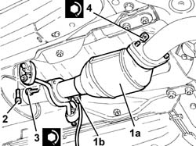
Applies to: engines: 2.0 TS; all production periods
Secure the electrical wiring for the Lambda sensor to the fastenings.
Connect the electrical connection for the Lambda sensor.
Connect the battery terminal (-).
Remove the car from the ramp.
Applies to: engines: 1.9 JTD 8V; all production periods
Removing
RefittingPlace the car on a ramp.
Raise the lift.
1. Remove rubber blocks (1a) from retaining pins (1b).
2. Undo the bolts securing the catalytic convertor to the front section of the exhaust pipe.
3. Undo the bolts securing the catalytic converter to the intermediate silencer.
4. Remove the catalytic converter.
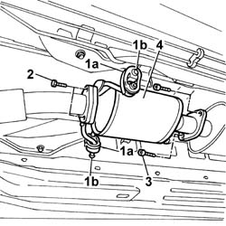
Applies to: engines: 1.9 JTD 8V; all production periods
Refitting
Removing1. Fit the catalytic converter and tighten the retaining bolts with the exhaust pipe front section.
2. Secure the rubber mountings (2a) to the pins on the bodyshell (2b).
3. Tighten the bolts fixing the catalytic converter to the intermediate silencer.
4. Tighten the bolts securing the catalytic converter to the front exhaust pipe section.
| Fastening | Component | Ø | Value (daNm) |
|---|---|---|---|---|
4 | Bolt | EXHAUST PIPE TO ENGINE | M8 | (catalytic converter) 3 |
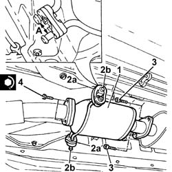
Applies to: engines: 1.9 JTD 8V; all production periods
Remove the vehicle from the ramp.
Applies to: engines: 1.9 JTD 16V; all production periods
Removing
RefittingPosition the vehicle on the ramp.
1. Undo the nuts securing the catalytic convertor to the front section of the exhaust pipe.
2. Undo the bolts securing the catalytic converter to the rigid exhaust pipe section.
3. Remove the catalytic converter (3a) after having released it from the flexible mountings (3b).
Remove the gaskets.
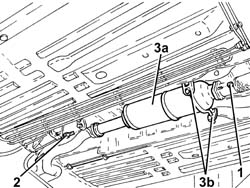
Applies to: engines: 1.9 JTD 16V; all production periods
Refitting
Removing1. Place the catalytic converter (1a) complete with gaskets in its housing and fasten it to the flexible mountings (1b).
2. Tighten the bolts securing the catalytic converter to the exhaust pipe rigid section to the specified torque.
| Fastening | Component | Ø | Value (daNm) |
|---|---|---|---|---|
2 | Bolt | CATALYTIC CONVERTER (ONE) | M8 | (Rigid pipe side) 2.3 ÷ 2.8 |
3. Tighten the nuts fixing the catalytic converter to the front section of the exhaust pipe to the recommended torque.
| Fastening | Component | Ø | Value (daNm) |
|---|---|---|---|---|
3 | Nut | CATALYTIC CONVERTER (ONE) | M8 | (Exhaust pipe front section side) 2.3 ÷ 2.8 |
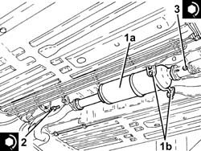
Applies to: engines: 1.9 JTD 16V; all production periods
Remove the car from the ramps.
Topics linked from this page (4)
- 1072C44 exhaust manifold heat shield on bulkhead - r+r
- A1B Battery ( Connectors )
- K15 Lambda sensor on pre-catalyzer
- K17 Lambda sensor downstream of post-catalyzer
Topics that link to this page (33)
- Z55 CATALYZER ERROR
- 0510C20 lubrication system - check delivery pressure
- 1020A20 crank case oil sump - r + r clean seals for sealant application
- 1020D10 front crank shaft oil seal cover - r + r and replace seals with timing belt removed
- 1020D38 flywheel side oil seal - replace
- 1024B10 engine flywheel - r + r for versions with manual gearbox
- 1028H10 connecting rod and piston set - r r
- 1072C12 exhaust manifold - r r
- 1072C13 exhaust manifold gasket - replace
- 1076A48 catalytic converter heat shield - r r
- 1076B12 exhaust pipe assembly r+r emission control versions
- 1076B34 front catalytic converter attachment seal - replace
- 1084A42 engine oil pressure warning light switch - r + r
- 1084B26 emgine oil intake duct - r r
- 1088D24 rigid pipe for coolant inlet to water pump - r + r
- 1810A20 clutch - r + r
- 1820B30 OPERATING CYLINDER/CLUTCH HYDRAULIC ACTUATOR - R.R.
- 2110A10 manual gearbox and differential - r + r
- 2125C70 gearbox/brake lever mount - r r
- 2710A32 intermediate drive shaft bearing support - r + r with intermediate drive shaft removed
- 2710A35 intermediate drive shaft mount - r r
- 3340B56 RIGID PIPE from hydraulic CONTROL UNIT to RIGHT FRONT BRAKE - R.R.
- 4130A10 power steering box - r+r - check tow-in if necessary separately - includes bleeding
- 4130B20 power steering pump r r
- 4130B40 outlet pipe from pump to power steering case r r
- 4130B49 return pipe from power steering case to heat exchanger pipe r r
- 4410c10 front suspension stabilizer bar - r+r - check wheel geometry separately
- 4410D13 front suspension beam - r r
- 4410D15 front suspension beam complete with wishbones and stabiliser bar r r
- 5510C26 rpm sensor - r+r
- 5510C42 knock sensor - r+r
- 5520B12 starter motor - r+r for versions with a/c
- 5530A10 alternator - r+r